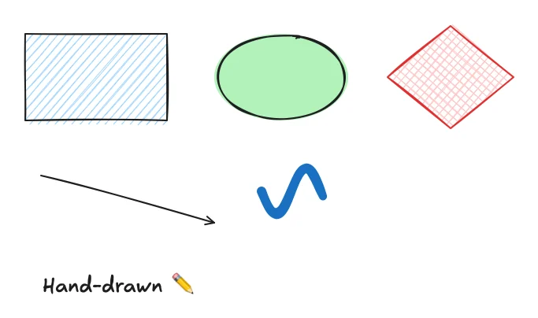
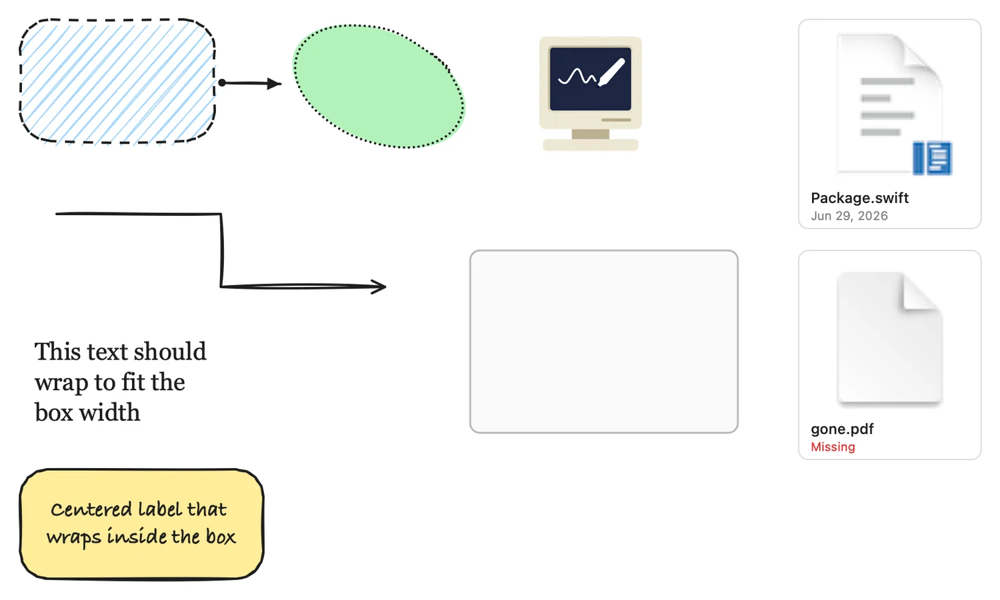
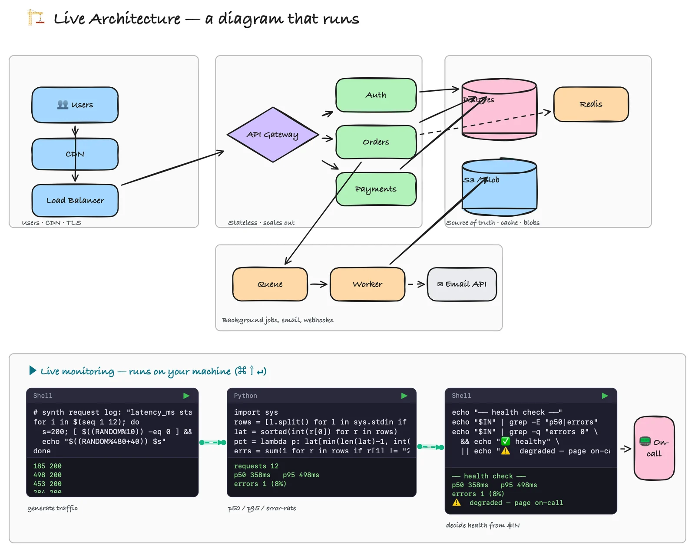

The fastest way to start architecting. Press ⌥⌘W and the screen
you're already staring at becomes a hand-drawn whiteboard — sketch the
system, pin the real files, wire in your vault.
Idle, your sketches rest on the wallpaper and clicks pass through to Finder.
Hit ⌥⌘W and the desktop becomes a live board — every stroke a faithful
Swift port of rough.js, rendered in pure Core Graphics.

02Solid · wash · transparent
Your board, your backdrop.
Solid white when you need focus. A light wash that lets the wallpaper breathe.
Or fully transparent — drawing straight onto your desktop. One switch in the
gear menu; your drawings stay put across all three.
Solid white
Light wash
📁Transparent
03Link your files
Your files, pinned to the board.
Press / to Spotlight-search anything on your Mac and drop it in as a live
linked card — real Quick Look thumbnails, modified dates, a Missing badge
if it moves. Space to peek, double-click to open. Arrows bind to the
cards and re-route when you move them.

04Obsidian inside
Your vault, on the canvas.
Notes drop in as obsidian:// cards that open straight into your vault —
wire them to shapes, files, and code cells, and your second brain gets a spatial
layer. The sidebar shelf keeps vault search one keystroke away.
Daily/2026-07-02.md
obsidian://open?vault=Notes
opens in vault
double-click any note card → straight into Obsidian
05Diagrams at desktop speed
The fastest way to architect on your desktop.
Labeled frames, bound arrows and elbow connectors keep system diagrams tidy no
matter how fast you sketch — and code cells make them run. This board's
monitoring pipeline actually executed to print those p50 / p95 numbers.

06Boards in tabs
A board for every thread.
Spin up as many boards as you're thinking about — named, reorderable tabs,
each with its own autosave and export. Switch instantly; nothing gets lost.
RoadmapSys designScratch+
drag tabs to reorder ↔ · right-click to export just that board
07Idea → Build → Ship
Ship it — even to your agents.
Boards autosave as .excalidraw and export to crisp PNG or true-vector SVG.
And when it's time to build, Export as HTML hands the whole board to Claude
or any coding agent — every shape, label, and connection in a format it can read.
Sketch the architecture, then hand it off.